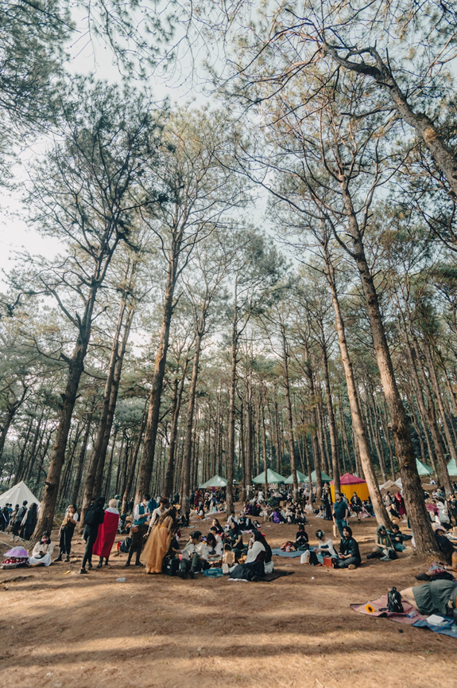
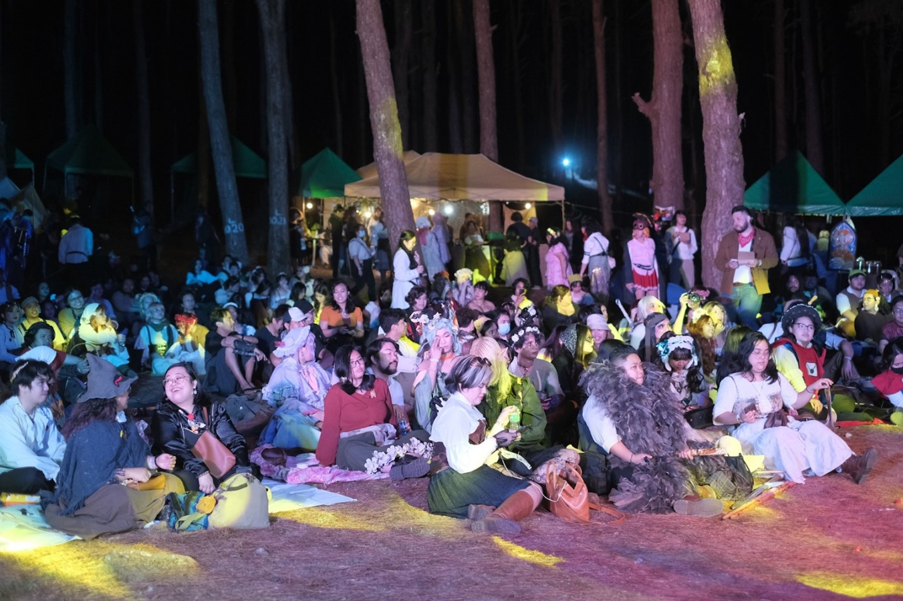
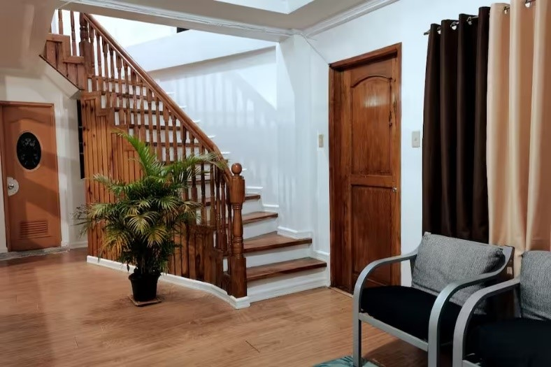

The Cold Comfort in a Summerland
by Alvarez, Rainier | July 24, 2025
Only one place comes to my mind when asked to write about a destination in the Philippines—a place where summer wind turns into a cold, refreshing breeze; a place that is full of mist and adventure; and a place where a hot beverage makes sense. Baguio City, which is also dubbed the Summer Capital of the Philippines, is a destination that is worthy of a chapter in your story. And to convince you of that claim, I, the writer who speaks to you now, will share my story.
I was never one for tropical climates, especially when the sun lights the ground. I enjoy cloudy days and cold weather—and Baguio is always at least one of those. I travel more thanks to the cooler climate, and in Baguio, there are many places to be. Burnham Lake, which is atop a mountain, is surreal to me. There, you’d see swan boats emerge from the fog, treading the water gracefully. And there are many more sceneries here that seem all so magical.

And when I thought this city was already magical, they added fantasy. The first-ever official Renaissance Faire in the Philippines was held—and continues to be—in Baguio City. Renfaire is a three-day annual event that pulls you into a whole new world. Thousands of adventurers travel across the land to experience this tale. And in this tale—I bartered with merchants and artisans whose wares were handcrafted and vintage; I rallied and fought alongside strangers whom I just met in Live Action Roleplay; I adored the Burlesque Performers who played traditional songs and danced in historical attire; and I joined the community in cheers and revelry as we spent the evening away.

After an adventurous day, what better way to spend the night than with a hot beverage, a cozy blanket, and free air conditioning? Because that’s every night in Baguio. Bale Tako, which is my family’s vacation home and Airbnb, is open for you and your stories to come. Nestled along Gibraltar Road, which runs adjacent to Mines View Park—a landmark that is beloved for its panoramic vistas—our vacation home places tourist attractions right at your fingertips. Our guests can be among the first to enter the pasalubong stores, many of which open at dawn, or be among the few who may enjoy the park in uncrowded serenity. And if you ever feel adrift in the freedom that Baguio provides, Franklyn, who is our vacation home’s super host, is ever ready to guide you on a curated journey.

REFERENCES
- Facebook. (n.d.). https://www.facebook.com/RenFairePH/
- Franklin. (n.d.). Condo in Baguio City. Airbnb. https://www.airbnb.com/rooms/991231626713861136?source_impression_id=p3_1753414624_P3z1ImxtJameySyz
- Franklin. (n.d.). Bale Tako | Family/Group. Airbnb. https://www.airbnb.com/rooms/974538917959579479?source_impression_id=p3_1753414764_P3QYjDhMgpBy-0xh